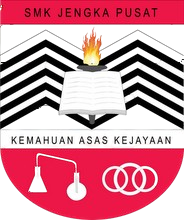
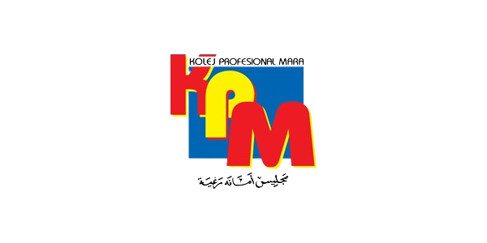
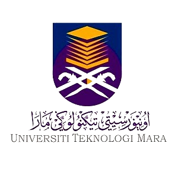

I went to Sekolah Kebangsaan Jengka 8 for my primary education back then in 2007 and i finished my primary school with 5A in UPSR in 2013.

After i finished my primary school, i got accepted into a boarding school in 2014 until 2018.

Then, after i sat for my SPM examination in 2018, i pursued my study to Diploma level in Kolej Profesional Mara Bandar Melaka in Diploma Islamic Banking and Finance in year 2019 until 2021.

In 2022, after i graduated from KPM Bandar Melaka, i decided to further my study in Bachelor Degree level in Universiti Teknologi Mara. Then, i got accepted into Universiti Teknologi Mara Kampus Kota Bharu in Bachelor in Business Administration (Hons) Finance